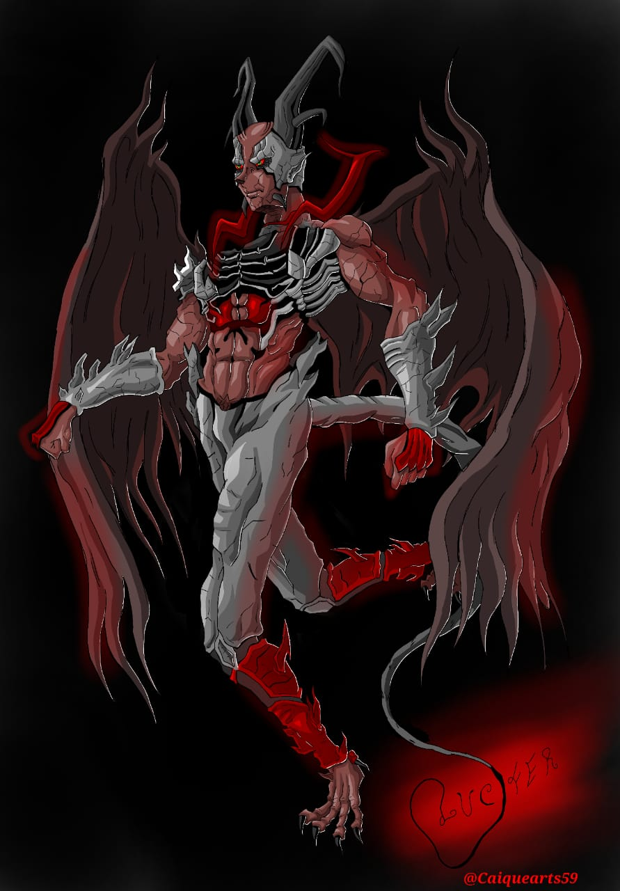
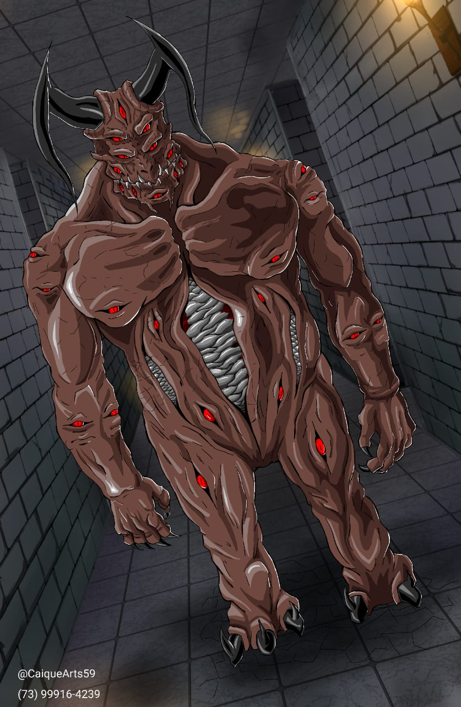
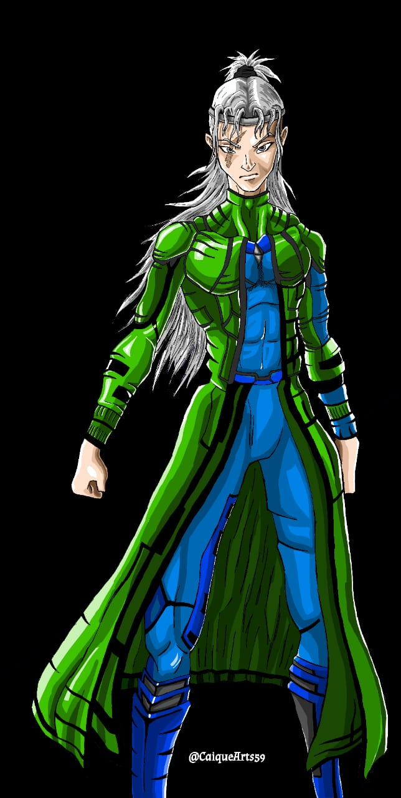
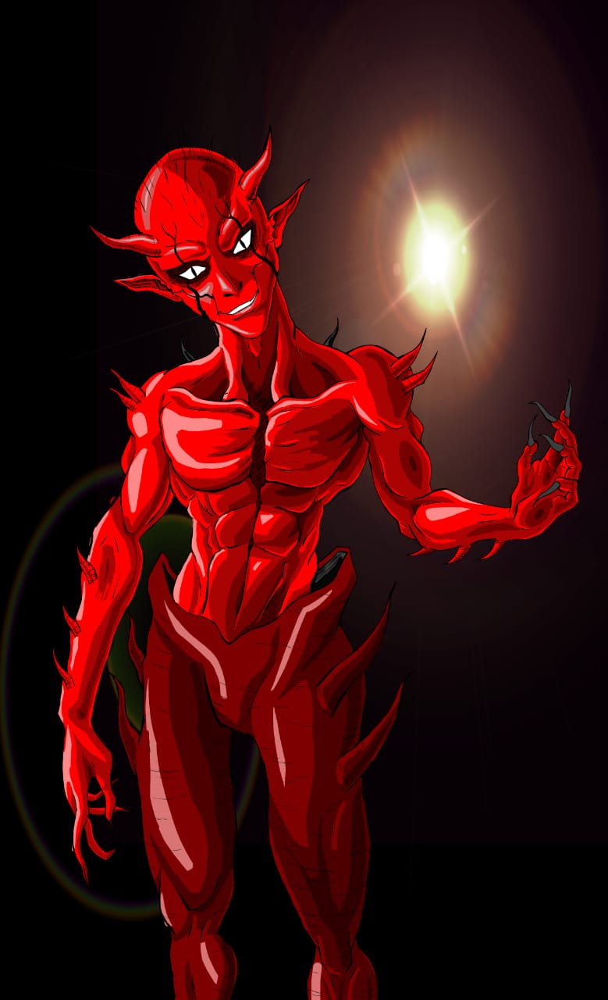
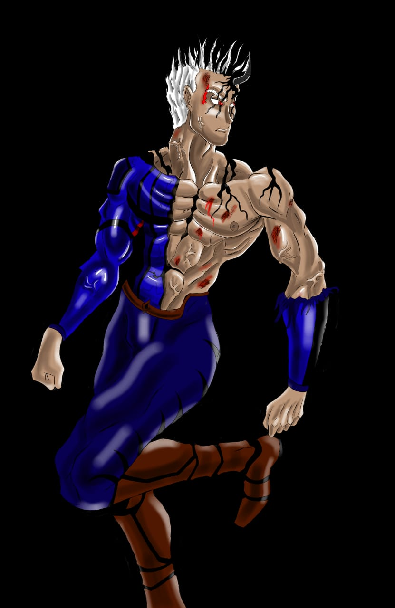

... Lúcifer Valtrianh, o Portador da luz e o primeiro dos caídos, a Personificação do Orgulho tem seu próprio domínio no inferno, e seu rival Jirai está no caminho do seu obrigado...

A personificação da Gula e soldado fiel de Astaroth, trabalhando pro Portador da Luz, tudo ao seu olhar é devorado e membro da liga das trevas

Tsnax o último sobrevivente de Naru um mundo morto pela coisa que o próprio caça... Um caçador sobrenatural pelo universo

A primeira forma da personificação do desespero, Schlecht, líder da liga das trevas, e com o poder de inbuí desespero puro na humanidade

Jackson Maia, o lado benigno do Deus caído Yander Borthy Maia, e atual guardião da luz, a atual portador da Luz! Um mero terráqueo que vive sua vida, más é interrompido...